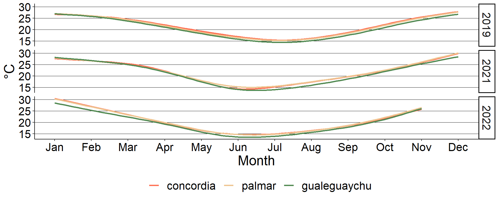
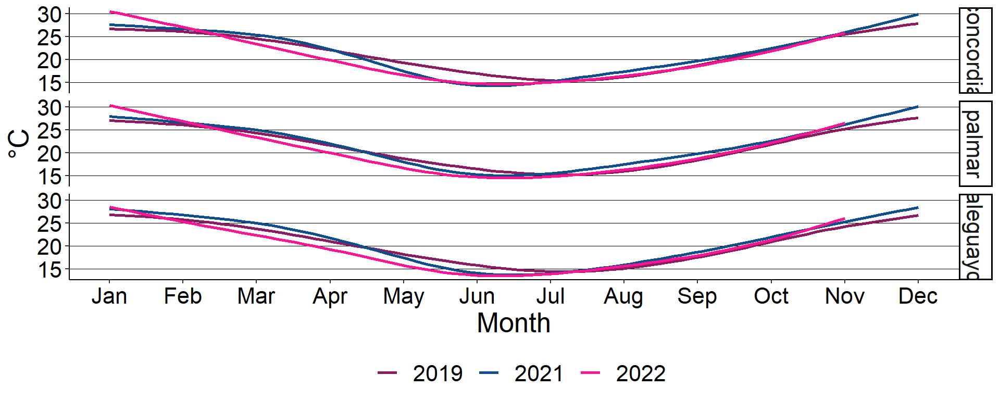

Meteorological

## site month year N temp sd se ci
## 1 concordia 1 2019 31 26.22903 4.020464 0.7220966 1.4747180
## 2 concordia 1 2021 31 27.48387 3.183195 0.5717187 1.1676054
## 3 concordia 1 2022 31 30.25806 5.050068 0.9070189 1.8523798
## 4 concordia 2 2019 28 26.64286 4.099632 0.7747577 1.5896714
## 5 concordia 2 2021 28 26.75000 2.293388 0.4334096 0.8892831
## 6 concordia 2 2022 28 27.62500 3.902006 0.7374098 1.5130398
## 7 concordia 3 2019 31 24.37097 3.001243 0.5390392 1.1008650
## 8 concordia 3 2021 31 24.99355 3.398425 0.6103751 1.2465522
## 9 concordia 3 2022 31 22.75484 3.829868 0.6878647 1.4048071
## 10 concordia 4 2019 30 22.48667 3.724915 0.6800732 1.3909060
## 11 concordia 4 2021 30 23.05667 2.789844 0.5093535 1.0417449
## 12 concordia 4 2022 30 21.00333 3.138140 0.5729433 1.1718005
## 13 concordia 5 2019 31 18.57419 2.754508 0.4947242 1.0103615
## 14 concordia 5 2021 31 16.97097 3.587961 0.6444168 1.3160746
## 15 concordia 5 2022 31 16.32258 3.169407 0.5692423 1.1625478
## 16 concordia 6 2019 30 17.91000 3.631790 0.6630711 1.3561326
## 17 concordia 6 2021 30 13.91333 4.193734 0.7656675 1.5659659
## 18 concordia 6 2022 30 12.66333 2.235371 0.4081211 0.8347014
## 19 concordia 7 2019 31 14.22258 3.959353 0.7111207 1.4523023
## 20 concordia 7 2021 31 15.28710 4.202677 0.7548231 1.5415544
## 21 concordia 7 2022 31 16.43548 4.574389 0.8215845 1.6778993
## 22 concordia 8 2019 31 15.98387 5.087049 0.9136609 1.8659445
## 23 concordia 8 2021 31 17.73548 5.171431 0.9288164 1.8968962
## 24 concordia 8 2022 31 16.24516 4.140599 0.7436735 1.5187839
## 25 concordia 9 2019 30 18.99667 4.598087 0.8394920 1.7169538
## 26 concordia 9 2021 30 19.28333 3.216025 0.5871631 1.2008834
## 27 concordia 9 2022 30 18.39333 2.871493 0.5242605 1.0722331
## 28 concordia 10 2019 31 21.72903 5.745270 1.0318810 2.1073821
## 29 concordia 10 2021 31 22.62903 4.944909 0.8881319 1.8138074
## 30 concordia 10 2022 31 21.40323 3.281614 0.5893952 1.2037057
## 31 concordia 11 2019 30 26.58667 2.788985 0.5091966 1.0414241
## 32 concordia 11 2021 30 25.70333 3.496055 0.6382894 1.3054485
## 33 concordia 11 2022 28 26.28214 4.131994 0.7808734 1.6022199
## 34 concordia 12 2019 31 27.30323 4.140087 0.7435816 1.5185963
## 35 concordia 12 2021 31 29.96129 3.461568 0.6217159 1.2697133
## 36 palmar 1 2019 31 26.49355 3.816974 0.6855488 1.4000774
## 37 palmar 1 2021 31 27.77419 3.422569 0.6147115 1.2554084
## 38 palmar 1 2022 31 30.19355 5.331787 0.9576173 1.9557154
## 39 palmar 2 2019 28 26.76071 4.353061 0.8226512 1.6879408
## 40 palmar 2 2021 28 26.71429 2.492316 0.4710035 0.9664193
## 41 palmar 2 2022 28 27.17857 3.944556 0.7454511 1.5295392
## 42 palmar 3 2019 31 24.14839 2.936310 0.5273768 1.0770471
## 43 palmar 3 2021 31 24.61290 3.720909 0.6682949 1.3648403
## 44 palmar 3 2022 31 22.61290 3.913033 0.7028015 1.4353121
## 45 palmar 4 2019 30 22.30667 3.612329 0.6595180 1.3488658
## 46 palmar 4 2021 30 23.26667 3.050532 0.5569484 1.1390875
## 47 palmar 4 2022 30 21.26667 3.215623 0.5870897 1.2007333
## 48 palmar 5 2019 31 17.80968 2.960445 0.5317117 1.0859001
## 49 palmar 5 2021 31 17.35484 3.251137 0.5839215 1.1925267
## 50 palmar 5 2022 31 16.58065 3.201814 0.5750628 1.1744349
## 51 palmar 6 2019 30 17.33667 3.581127 0.6538214 1.3372148
## 52 palmar 6 2021 30 14.53333 4.183163 0.7637375 1.5620186
## 53 palmar 6 2022 30 12.63333 2.042367 0.3728836 0.7626325
## 54 palmar 7 2019 31 14.27742 3.978753 0.7146051 1.4594183
## 55 palmar 7 2021 31 15.25806 4.179057 0.7505808 1.5328904
## 56 palmar 7 2022 31 16.00000 4.611580 0.8282642 1.6915411
## 57 palmar 8 2019 31 15.53548 4.844141 0.8700333 1.7768451
## 58 palmar 8 2021 31 18.41935 4.917819 0.8832664 1.8038707
## 59 palmar 8 2022 31 16.12903 4.039323 0.7254838 1.4816356
## 60 palmar 9 2019 30 18.78333 4.606748 0.8410733 1.7201879
## 61 palmar 9 2021 30 19.13333 3.411273 0.6228103 1.2737902
## 62 palmar 9 2022 30 18.76667 2.990598 0.5460060 1.1167078
## 63 palmar 10 2019 31 21.12258 5.183802 0.9310384 1.9014340
## 64 palmar 10 2021 31 22.87097 5.004944 0.8989144 1.8358282
## 65 palmar 10 2022 31 21.58065 3.500230 0.6286599 1.2838949
## 66 palmar 11 2019 30 26.71000 2.982287 0.5444886 1.1136042
## 67 palmar 11 2021 30 25.90000 3.575298 0.6527572 1.3350384
## 68 palmar 11 2022 28 27.00000 4.878828 0.9220118 1.8918120
## 69 palmar 12 2019 31 26.94194 4.938541 0.8869881 1.8114713
## 70 palmar 12 2021 31 30.29032 3.743381 0.6723311 1.3730833
## 71 gualeguaychu 1 2019 31 26.27419 3.645085 0.6546766 1.3370280
## 72 gualeguaychu 1 2021 31 27.98077 4.080494 0.7328783 1.4967372
## 73 gualeguaychu 1 2022 31 28.63226 4.714615 0.8467698 1.7293346
## 74 gualeguaychu 2 2019 28 26.83929 4.630282 0.8750410 1.7954359
## 75 gualeguaychu 2 2021 28 26.95714 2.515644 0.4754121 0.9754650
## 76 gualeguaychu 2 2022 28 25.10357 3.582724 0.6770712 1.3892354
## 77 gualeguaychu 3 2019 31 23.14194 3.193198 0.5735154 1.1712746
## 78 gualeguaychu 3 2021 31 24.57419 4.075943 0.7320610 1.4950680
## 79 gualeguaychu 3 2022 31 22.17097 3.846574 0.6908650 1.4109346
## 80 gualeguaychu 4 2019 30 21.57667 3.613832 0.6597924 1.3494270
## 81 gualeguaychu 4 2021 30 22.85667 2.742222 0.5006590 1.0239625
## 82 gualeguaychu 4 2022 30 20.02333 3.255731 0.5944124 1.2157098
## 83 gualeguaychu 5 2019 31 17.80968 2.737560 0.4916803 1.0041452
## 84 gualeguaychu 5 2021 31 16.92903 3.482929 0.6255525 1.2775487
## 85 gualeguaychu 5 2022 31 15.83871 3.180532 0.5712404 1.1666286
## 86 gualeguaychu 6 2019 30 16.28667 3.505339 0.6399844 1.3089151
## 87 gualeguaychu 6 2021 30 13.53000 3.843503 0.7017245 1.4351877
## 88 gualeguaychu 6 2022 30 12.28000 2.206323 0.4028177 0.8238546
## 89 gualeguaychu 7 2019 31 13.61935 4.041322 0.7258428 1.4823687
## 90 gualeguaychu 7 2021 31 13.86452 3.573472 0.6418144 1.3107599
## 91 gualeguaychu 7 2022 31 14.61613 4.128849 0.7415633 1.5144742
## 92 gualeguaychu 8 2019 31 14.74516 4.314691 0.7749414 1.5826415
## 93 gualeguaychu 8 2021 31 16.57419 4.020860 0.7221677 1.4748632
## 94 gualeguaychu 8 2022 31 15.60645 3.377468 0.6066112 1.2388653
## 95 gualeguaychu 9 2019 30 17.92000 5.106210 0.9322621 1.9066901
## 96 gualeguaychu 9 2021 30 17.99333 2.966704 0.5416436 1.1077855
## 97 gualeguaychu 9 2022 30 18.16000 3.088868 0.5639475 1.1534021
## 98 gualeguaychu 10 2019 31 20.24839 4.767031 0.8561840 1.7485609
## 99 gualeguaychu 10 2021 31 22.45806 5.229772 0.9392948 1.9182959
## 100 gualeguaychu 10 2022 31 20.63548 4.526113 0.8129139 1.6601917
## 101 gualeguaychu 11 2019 30 25.54333 3.584034 0.6543521 1.3383002
## 102 gualeguaychu 11 2021 30 25.14333 4.000231 0.7303390 1.4937109
## 103 gualeguaychu 11 2022 28 26.47143 4.421736 0.8356295 1.7145701
## 104 gualeguaychu 12 2019 31 26.12903 4.460732 0.8011711 1.6362097
## 105 gualeguaychu 12 2021 31 28.45161 3.654392 0.6563482 1.3404418